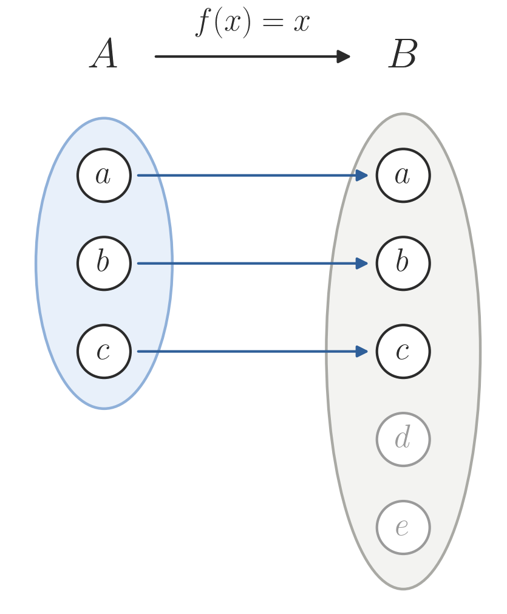
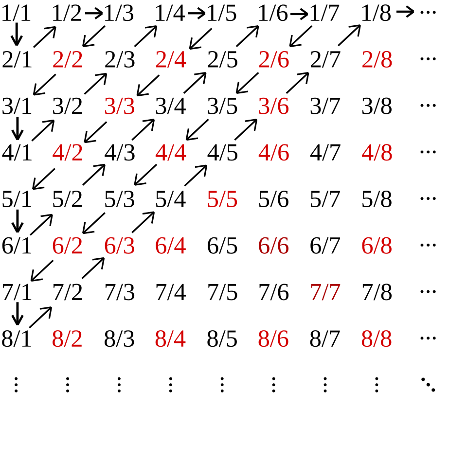

07wk-1: 카디널리티 (2)
1. 강의영상
2. Size와 Cardinality (계속)
- 복습
우리가 궁금했던 것: 유리수와 무리수 중 어느 쪽이 더 많을까?
전통적으로 두 집합 \(A\), \(B\)의 크기를 비교하는 방법
- \(A\)와 \(B\)의 원소의 수를 각각 센다.
- 1에서 센 원소의 수를 비교한다.
특이한 방식으로 두 집합 \(A\), \(B\)의 크기를 비교하는 방법
- \(A \to B\)인 단사함수가 있으면 \(|A| \leq |B|\)이다.
- \(A \to B\)인 전사함수가 있으면 \(|A| \geq |B|\)이다.
- \(A \to B\)인 전단사함수가 있으면 \(|A| = |B|\)이다.
비직관적인 결과: 자연수집합의 카디널리티와 짝수집합의 카디널리티가 같다.
- 약간의 이해를 돕기 위한 직관적인 표
| \(n\) | \(1\) | \(2\) | \(3\) | \(4\) | … |
|---|---|---|---|---|---|
| \(2n\) | \(2\) | \(4\) | \(6\) | \(8\) | … |
- 위와 같은 표를 만들 수 있고 (2) 각 행의 숫자들에 중복이 없다면 두 행의 카디널리티는 같다. (따라서 위의 표를 보면 자연수집합과 짝수집합의 카디널리티가 같음을 직관적으로 알 수 있다.)
- 자연수/홀수/짝수/정수의 카디널리티
- 자연수집합 \(\mathbb{N}\)의 카디널리티는 \(\aleph_0\)이다. (정의)
- 짝수인 자연수 집합의 카디널리티는 \(\aleph_0\)이고, 홀수인 자연수 집합의 카디널리티도 \(\aleph_0\)이다.
- 정수집합 \(\mathbb{Z}\)의 카디널리티 역시 \(\aleph_0\)이다.
- 홀수집합과 짝수집합의 카디널리티가 같은 이유는?
(표로 해석)
| \(\mathbb{N}_{odd}\) (홀수) | \(1\) | \(3\) | \(5\) | \(7\) | … |
|---|---|---|---|---|---|
| \(\mathbb{N}_{even}\) (짝수) | \(2\) | \(4\) | \(6\) | \(8\) | … |
(엄밀하게)
홀수집합을 \(A\), 짝수집합을 \(B\)라고 하자. \(f: A \to B\)를 \(f(x)=x+1\)로 두면 \(f\)는 전단사함수이다. 따라서 \(|A| = |B|\)이다.
- 홀수집합과 자연수집합의 카디널리티가 같은 이유는?
(표로 해석)
| \(\mathbb{N}_{odd}\) (홀수) | \(1\) | \(3\) | \(5\) | \(7\) | … |
|---|---|---|---|---|---|
| \(\mathbb{N}\) (자연수) | \(1\) | \(2\) | \(3\) | \(4\) | … |
(엄밀하게)
홀수집합을 \(A\)라고 하자. \(f: A \to \mathbb{N}\)을 \(f(x)=\frac{x+1}{2}\)로 두면 \(f\)는 전단사함수이다. 따라서 \(|A| = |\mathbb{N}|\)이다.
- 자연수집합과 정수집합의 카디널리티가 같은 이유는?
(표로 해석)
| \(\mathbb{N}\) (자연수) | \(1\) | \(2\) | \(3\) | \(4\) | \(5\) | … |
|---|---|---|---|---|---|---|
| \(\mathbb{Z}\) (정수) | \(0\) | \(1\) | \(-1\) | \(2\) | \(-2\) | … |
(엄밀하게)
\(f: \mathbb{N} \to \mathbb{Z}\)를 아래와 같이 두자.
\[f(n)=\begin{cases} \frac{n}{2} & n \text{ even} \\ -\frac{n-1}{2} & n \text{ odd} \end{cases}\]
그러면 \(f(1)=0\), \(f(2)=1\), \(f(3)=-1\), \(f(4)=2\), \(\dots\) 이고 \(f\)는 전단사함수이다. 짝수는 양의 정수로, 홀수는 \(0\) 이하의 정수로 가므로 서로 겹치지 않고(단사), 양의 정수 \(k\)는 \(f(2k)\)로, \(0\) 이하의 정수 \(-k\)는 \(f(2k+1)\)로 모두 나온다(전사). 따라서 \(|\mathbb{N}| = |\mathbb{Z}|\)이다.
A. 카디널리티의 유용한 개념
# 개념1 – \(A \subset B\) 라면, 항상 \(A\)에서 \(B\)로 가는 단사함수가 존재한다. 즉 \(|A| \leq |B|\) 가 성립한다.
(왜?)
\(f: A \to B\) 인 함수 \(f\)를 항등함수로 잡으면 이 함수는 단사이다.

#
# 예제1 – 아래의 수열을 고려하자. \[0,\frac{1}{2}, \frac{2}{2}, \frac{1}{3}, \frac{2}{3}, \frac{3}{3}, \dots \] 이 수열의 원소들로 이루어진 집합 \(A\)의 카디널리티가 \(\aleph_0\)임을 보여라.
(풀이1)
아래의 표를 관찰하자.
| \(n\) | \(1\) | \(2\) | \(3\) | \(4\) | \(5\) | \(6\) | \(7\) | \(8\) | \(9\) | \(10\) | \(11\) |
|---|---|---|---|---|---|---|---|---|---|---|---|
| \(a(n)=a_n\) | \(0\) | \(1/2\) | \(2/2\) | \(1/3\) | \(2/3\) | \(3/3\) | \(1/4\) | \(2/4\) | \(3/4\) | \(4/4\) | \(1/5\) |
아래 행에는 겹치는 원소가 있다. 예를 들어 \(a_3=\frac{2}{2}\)와 \(a_6=\frac{3}{3}\)은 둘 다 \(1\)이고, \(a_2=\frac{1}{2}\)와 \(a_8=\frac{2}{4}\)는 둘 다 \(\frac{1}{2}\)이다. 그래서 이 표만 보고 바로 두 행의 카디널리티가 같다고 할 수는 없다.
그렇지만 \(|\mathbb{N}| \geq |A|\)임은 알 수 있다. 직관적으로는, 아래 행이 \(A\)의 원소를 겹치는 것까지 포함해서 나열하고 있으니 \(A\)의 원소가 \(\mathbb{N}\)의 원소보다 많을 수는 없다. 좀 더 엄밀하게는 \(a: \mathbb{N} \to A\)가 전사함수이기 때문이다. 즉 모든 \(x \in A\)에 대하여 \(a(n)=x\)인 \(n\)이 최소한 하나는 있다. 실제로
- \(x=0\) 에는 \(n=1\)
- \(x=\frac{1}{2}\) 에는 \(n=2\) (그리고 \(n=8\))
- \(x=1\) 에는 \(n=3\) (그리고 \(n=6\), \(n=10\))
- \(x=\frac{1}{3}\) 에는 \(n=4\), \(\quad x=\frac{2}{3}\) 에는 \(n=5\), \(\quad x=\frac{1}{4}\) 에는 \(n=7\), \(\quad \dots\)
와 같이 대응되고, 일반적으로 \(x=\frac{p}{q}\) \((1 \leq p \leq q,\ q \geq 2)\)는 \(n=\frac{q(q-1)}{2}+p\) 번째에 나온다. (이 수업에서는 굳이 이렇게까지 수식화 할 필요는 없다, 표로 이해만해도 충분함)
아무튼 \(|\mathbb{N}| \geq |A|\)는 나왔으니, 이제 \(|\mathbb{N}| \leq |A|\)만 보이면 된다.
이를 위해서는 \(\mathbb{N}\)에서 \(A\)로 가는 단사함수를 아무거나 하나 제시하면 된다. 예를 들어 \(f(n)=\frac{1}{n}\)으로 두면 \(f(n) \in A\)이고 (\(f(1)=1=\frac{2}{2}\)), \(n \neq m\)이면 \(\frac{1}{n} \neq \frac{1}{m}\)이므로 \(f\)는 단사함수이다. 따라서 \(|\mathbb{N}| \leq |A|\)이고, 앞의 결과와 합치면 \(|A| = |\mathbb{N}| = \aleph_0\)이다.
(풀이2) 아래와 같은 표를 고려하자.
| \(n\) | \(1\) | \(2\) | \(3\) | \(4\) | \(5\) | \(6\) | \(7\) | \(8\) | \(\cdots\) |
|---|---|---|---|---|---|---|---|---|---|
| \(b(n)=b_n\) | \(1\) | \(2\) | \(3\) | \(4\) | \(5\) | \(7\) | \(9\) | \(11\) | \(\cdots\) |
| \(a(b_n)\) | \(0\) | \(1/2\) | \(2/2\) | \(1/3\) | \(2/3\) | \(1/4\) | \(3/4\) | \(1/5\) |
이 표의 세 행에는 각각 겹치는 원소가 없으므로, 세 행의 카디널리티가 모두 같음을 직관적으로 알 수 있다. 그런데 첫 행은 자연수집합 \(\mathbb{N}\)이고 세 번째 행은 집합 \(A\)이다. 즉 \(f(n)=a(b_n)\)으로 두면 \(f\)는 \(\mathbb{N}\)에서 \(A\)로 가는 전단사함수이므로 바로 \(|A| = |\mathbb{N}|\)임을 알 수 있다.
집합을 \(A=\{a_1,a_2,a_3,\dots\}\)와 같이 쓴다는 것은 그 자체로 \(a_1,a_2,a_3,\dots\)이 서로 다른 수라는 것을 의미한다. 집합은 중복된 원소를 허용하지 않기 때문이다. 그래서 \(A=\{1,1,2\}\)와 같은 것은 집합이라고 하지 않는다.
# 개념2 – 무한집합 \(A\)를 아래와 같이 쓸 수 있다면
\[ A = \{a_1,a_2,a_3,\dots \}\] 집합 \(A\)의 cardinality는 \(\aleph_0\)이다.
#
- 개념2의 역도 성립한다. 즉 어떠한 무한집합의 카디널리티가 \(\aleph_0\)이면 그 무한집합의 원소는 원소나열법으로 표현할 수 있다. 따라서 아래는 모두 같은 말이다.
- 무한집합 \(A\)의 원소를 수열 \(a_1, a_2, a_3, \dots\)로 나열할 수 있다. (중복이 있어도 된다. 풀이2처럼 중복을 건너뛰면 되기 때문이다. \(1, 1, 1, \dots\)처럼 값이 유한개뿐인 수열은 \(A\)가 무한집합이라는 조건에서 이미 빠진다.)
- 무한집합 \(A\)를 원소나열법으로 표현할 수 있다.
- 무한집합 \(A\)의 카디널리티는 \(\aleph_0\)이다.
#
# 예제2 – 이 개념을 이용하여 아래 집합의 카디널리티를 구해 보자.
\[B=\{-44,-2,0\} \cup \mathbb{N}\]
(표로 해석)
| \(\mathbb{N}\) (자연수) | \(1\) | \(2\) | \(3\) | \(4\) | \(5\) | \(6\) | \(7\) | … |
|---|---|---|---|---|---|---|---|---|
| \(B\) | \(-44\) | \(-2\) | \(0\) | \(1\) | \(2\) | \(3\) | \(4\) | … |
아래 행에는 겹치는 원소가 없고 \(B\)의 원소가 빠짐없이 나온다. 즉 \(B\)의 원소를 \(-44, -2, 0, 1, 2, 3, \dots\)과 같이 수열로 나열할 수 있으므로, 개념2에 의해 \(|B|=\aleph_0\)이다.
(엄밀하게)
\(f: \mathbb{N} \to B\)를 아래와 같이 두자.
\[f(n)=\begin{cases} -44 & n=1 \\ -2 & n=2 \\ 0 & n=3 \\ n-3 & n \geq 4 \end{cases}\]
\(n \geq 4\)인 부분은 \(\mathbb{N}\)의 원소 \(1, 2, 3, \dots\)을 겹치지 않고 빠짐없이 하나씩 맡고, \(n=1,2,3\)은 \(-44, -2, 0\)을 하나씩 맡는다. 따라서 \(f\)는 전단사함수이고 \(|B| = |\mathbb{N}| = \aleph_0\)이다.
#
B. 유리수의 카디널리티
# 예제3 – \(|\mathbb{N}| = |\mathbb{Q}|\) 임을 보여라. (https://en.wikipedia.org/wiki/Rational_number)

(풀이)
위 그림의 화살표를 따라 나오는 분수를 차례로 \(a_1, a_2, a_3, \dots\) 라고 하자.
| \(n\) | \(1\) | \(2\) | \(3\) | \(4\) | \(5\) | \(6\) | \(7\) | \(8\) | \(9\) | \(10\) | \(11\) | \(12\) | … |
|---|---|---|---|---|---|---|---|---|---|---|---|---|---|
| \(a_n\) | \(1/1\) | \(2/1\) | \(1/2\) | \(1/3\) | \(2/2\) | \(3/1\) | \(4/1\) | \(3/2\) | \(2/3\) | \(1/4\) | \(1/5\) | \(2/4\) | … |
모든 양의 유리수는 분수 \(\frac{p}{q}\)로 쓸 수 있으므로 이 수열 어딘가에 반드시 나온다. 다만 \(a_5=\frac{2}{2}=a_1\), \(a_{12}=\frac{2}{4}=a_3\) 처럼 이미 나온 수(그림의 빨간색)가 다시 나오기도 한다. 그래서 예제1의 풀이2와 같이 처음 나오는 항의 번호만 골라 \(b_n\) 이라 하자.
| \(n\) | \(1\) | \(2\) | \(3\) | \(4\) | \(5\) | \(6\) | \(7\) | \(8\) | \(9\) | \(10\) | … |
|---|---|---|---|---|---|---|---|---|---|---|---|
| \(b_n\) | \(1\) | \(2\) | \(3\) | \(4\) | \(6\) | \(7\) | \(8\) | \(9\) | \(10\) | \(11\) | … |
| \(a(b_n)\) | \(1\) | \(2\) | \(1/2\) | \(1/3\) | \(3\) | \(4\) | \(3/2\) | \(2/3\) | \(1/4\) | \(1/5\) | … |
세 번째 행에는 양의 유리수가 빠짐없이, 겹치지 않고 나온다. 즉 \(f(n)=a(b_n)\) 으로 두면 \(f\)는 \(\mathbb{N}\)에서 \(\mathbb{Q}^+\)로 가는 전단사함수이고, 따라서 \(|\mathbb{N}| = |\mathbb{Q}^+|\)이다. 이제 세 번째 행을 \(q_1, q_2, q_3, \dots\) 라고 쓰자. (\(q_1=1\), \(q_2=2\), \(q_3=\frac{1}{2}\), \(\dots\)) 음의 유리수도 \(g(x)=-x\) 를 이용하면 \(-q_1, -q_2, -q_3, \dots\) 로 셀 수 있다. 그러니 정수를 \(0\), 양수, 음수 순으로 번갈아 세었던 것과 똑같이 세면 된다.
| \(\mathbb{N}\) (자연수) | \(1\) | \(2\) | \(3\) | \(4\) | \(5\) | \(6\) | \(7\) | … |
|---|---|---|---|---|---|---|---|---|
| \(\mathbb{Z}\) (정수) | \(0\) | \(1\) | \(-1\) | \(2\) | \(-2\) | \(3\) | \(-3\) | … |
| \(\mathbb{Q}\) (유리수) | \(0\) | \(q_1\) | \(-q_1\) | \(q_2\) | \(-q_2\) | \(q_3\) | \(-q_3\) | … |
따라서 \(|\mathbb{N}| = |\mathbb{Q}|\)이다.